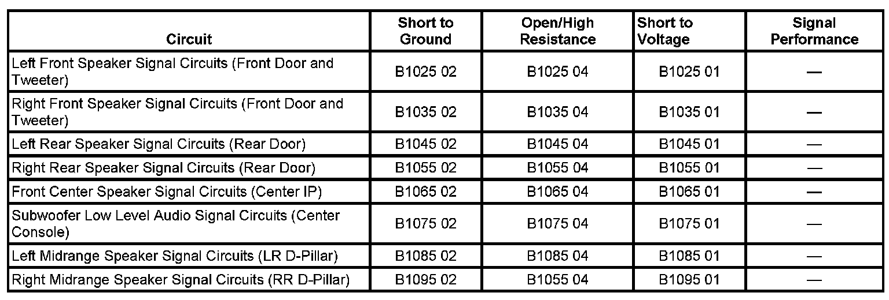

B1065
DTC B1025-B1095
DTC DESCRIPTORS
DTC B1025 01
Audio Output 1 Left Front Circuit Short to Battery
DTC B1025 02
Audio Output 1 Left Front Circuit Short to Ground
DTC B1025 04
Audio Output 1 Left Front Circuit Open
DTC B1035 01
Audio Output 2 Right Front Circuit Short to Battery
DTC B1035 02
Audio Output 2 Right Front Circuit Short to Ground
DTC B1035 04
Audio Output 2 Right Front Circuit Open
DTC B1045 01
Audio Output 3 Left Rear Circuit Short to Battery
DTC B1045 02
Audio Output 3 Left Rear Circuit Short to Ground
DTC B1045 04
Audio Output 3 Left Rear Circuit Open
DTC B1055 01
Audio Output 4 Right Rear Circuit Short to Battery
DTC B1055 02
Audio Output 4 Right Rear Circuit Short to Ground
DTC B1055 04
Audio Output 4 Right Rear Circuit Open
DTC B1065 01
Audio Output 5 Circuit Short to Battery (Center IP)
DTC B1065 02
Audio Output 5 Circuit Short to Ground (Center IP)
DTC B1065 04
Audio Output 5 Circuit Open (Center IP)
DTC B1075 01
Audio Output 6 Circuit Short to Battery (Subwoofer)
DTC B1075 02
Audio Output 6 Circuit Short to Ground (Subwoofer)
DTC B1075 04
Audio Output 6 Circuit Open (Subwoofer)
DTC B1085 01
Audio Output 7 Circuit Short to Battery (LR D-Pillar)
DTC B1085 02
Audio Output 7 Circuit Short to Ground (LR D-Pillar)
DTC B1085 04
Audio Output 7 Circuit Open (LR D-Pillar)
DTC B1095 01
Audio Output 8 Circuit Short to Battery (RR D-Pillar)
DTC B1095 02
Audio Output 8 Circuit Short to Ground (RR D-Pillar)
DTC B1095 04
Audio Output 8 Circuit Open (RR D-Pillar)
DIAGNOSTIC FAULT INFORMATION

Perform the Diagnostic System Check - Vehicle Diagnostic System Check - Vehicle prior to using this diagnostic procedure. Initial Inspection and Diagnostic Overview
CIRCUIT/SYSTEM DESCRIPTION
The up-level radio (UQA) supplies 4 channels of audio to an amplifier. The amplifier supplies 6 input signal channels to 8 speakers.
CONDITIONS FOR RUNNING THE DTC
The radio is ON.
CONDITIONS FOR SETTING THE DTC (DTC SET BY RADIO)
The radio sets a current status for this DTC when a short to ground, short to voltage or an open is detected on any of the 4 speaker channel outputs from the radio.
CONDITIONS FOR SETTING THE DTC (DTC SET BY BOSE AMPLIFIER)
The DTC will not set during normal amplifier operation. The vehicle must have the ignition OFF for several hours and the fault must be present during amplifier power-up.
ACTION TAKEN WHEN THE DTC SETS
No sound is present from one or more of the speakers.
CONDITIONS FOR CLEARING THE DTC (DTC SET BY RADIO)
The fault condition becomes history if not present for 0.25 seconds.
CONDITIONS FOR CLEARING THE DTC (DTC SET BY BOSE AMPLIFIER)
The fault condition becomes history after the vehicle ignition has been OFF for several hours and then the ignition turns ON.
DIAGNOSTIC AIDS
Speakers located in the front A-pillar are connected to the same channel as the speaker in the door. A DTC will only set after the amplifier only on up-level radios.
CIRCUIT/SYSTEM VERIFICATION (DTC SET BY RADIO)
All speakers should function properly and the DTC does not reset.
CIRCUIT/SYSTEM VERIFICATION (DTC SET BY BOSE AMPLIFIER)
- Clear the DTC with the scan tool.
- Disconnect the battery for 30 seconds and then reconnect the battery.
- Ignition ON, all speakers should function properly and the DTC does not reset.
CIRCUIT/SYSTEM TESTING
IMPORTANT: The DTC can be set by either the radio or the amplifier. If the DTC was set by the radio, diagnose suspect audio input circuits to the speakers or the amplifier (if equipped). Diagnose audio input signals to the speakers from the amplifier if the DTC was set by the amplifier.
DTC Set In Amplifier
1. With the scan tool, verify the DTC is set by the amplifier.
2. Ignition OFF, disconnect the suspect speaker. Test for 1 to 50 ohms across the speaker terminals.
- If ohms across the speaker are not in the specified range replace the suspect speaker.
3. Test or repair the suspect speaker input circuit for an open short to ground or short to power.
- If all circuits test normal, replace the amplifier.
4. Test the suspect low level audio signal circuit from the radio to the speakers or amplifier, if equipped, for an open short to ground or short to power.
- If all circuits test normal, replace the radio.
DTC Set In Radio With Amplifier
1. With the scan tool, verify the DTC is set by the radio.
2. Test the suspect low level audio signal circuit from the radio to the amplifier for an open short to ground or short to power.
- If all circuits test normal, replace the amplifier.
DTC Set In Radio Without Amplifier
1. With the scan tool, verify the DTC is set by the radio.
2. Ignition OFF, disconnect the suspect speaker. Test for 1 to 50 ohms across the suspect speaker terminals.
- If ohms across the speaker are not in the specified range replace the suspect speaker.
3. Test the suspect low level audio signal circuits from the radio to the speakers for an open short to ground or short to power.
- If all circuits test normal, replace the radio.
REPAIR INSTRUCTIONS
Perform the Diagnostic Repair Verification after completing the diagnostic procedure.
- Speaker Replacement Reference
- Control Module References for Amplifier and Radio replacement, setup, and programming. Programming and Relearning Verification Tests